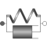
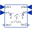

SpringDamperNoRelativeStatesLinear 1D rotational spring and damper in parallel (phi and w are not used as states) |

|
Information
This information is part of the Modelica Standard Library maintained by the Modelica Association.
A spring and damper element connected in parallel. The component can be connected either between two masses to describe the joint elasticity and damping, or between a mass and the housing (component Fixed), to describe a coupling of the element with the housing via a spring/damper.
This is the same element as Rotational.Components.SpringDamper but with the only difference, that the relative quantities are not used as states. If the relative states are potentially used as states, "a_rel = der(w_rel)" is present, and then exporting this model as FMU requires to also have the accelerations in the flanges as inputs, which is usually not desired for a force element.
Parameters (4)
| useHeatPort |
Value: false Type: Boolean Description: =true, if heatPort is enabled |
|---|---|
| c |
Value: Type: RotationalSpringConstant (N·m/rad) Description: Spring constant |
| d |
Value: Type: RotationalDampingConstant (N·m·s/rad) Description: Damping constant |
| phi_rel0 |
Value: 0 Type: Angle (rad) Description: Unstretched spring angle |
Connectors (3)
| flange_a |
Type: Flange_a Description: Left flange of compliant 1-dim. rotational component |
|
|---|---|---|
| flange_b |
Type: Flange_b Description: Right flange of compliant 1-dim. rotational component |
|
| heatPort |
Type: HeatPort_a Description: Optional port to which dissipated losses are transported in form of heat |
Used in Components (1)
|  |
Modelica.Mechanics.Rotational.Examples.Utilities Input/output block of a spring/damper model |